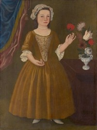

Catherine Elmendorf Bleecker
Catherine Elmendorf was born in 1747. She was the daughter of Kingston residents Peter/Petrus and Mary Crook Elmendorf. Her father was an Ulster County town leader who died in 1765.  This recently uncovered portrait of her at age five bears more investigation but has been described online. Her brother also established himself in Albany after the Revolution.
In October 1768, she married Albany native Rutger Bleecker. By 1788, the mariage may have produced as many as seven children who were christened in Catherine's Albany church and elsewhere. The last daughter was born on January 16, 1788 - three months after the death of her father.
These Bleeckers made their home in Albany's second ward where Rutger had begun to establish himself as a businessman.
Rutger Bleecker died in October 1787. She had been named principal heir and co-executor of the will Bleecker had filed a month earlier. In 1788, she was identified as the owner of property on the city assessment roll. In 1790, she was listed as the head of her Pearl Street household. A decade later, her household was configured on the census for the third ward.
In January 1808, her name appeared on the extensive guest list for a Bleecker family funeral. At that time, perhaps her aged mother-in-law the widow Elizabeth Staats Bleecker also lived in her house.
In July, a New York newspaper reported the death at Albany of Catherine Elmendorf Bleecker, widow of the late Rutger Bleecker. This Kingston native and Albany wife had lived more than sixty years.
Painting by an unidentified artist done about 1752. In the portrait collection of the Metropolitan Museum of Art. See also flickr and The Curated Object.